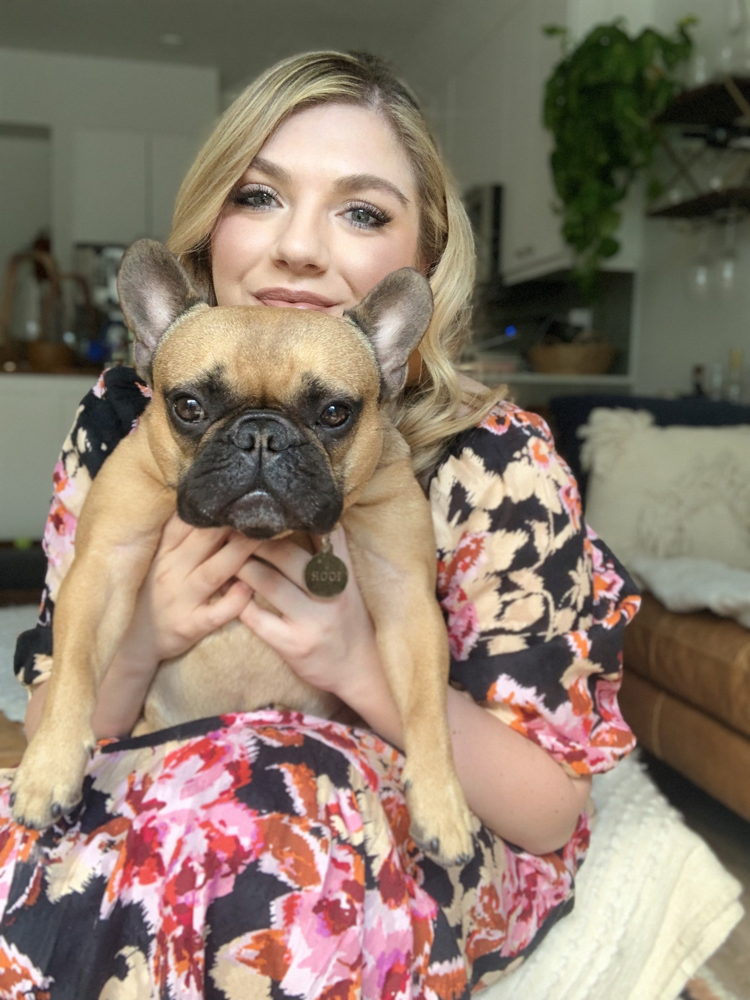
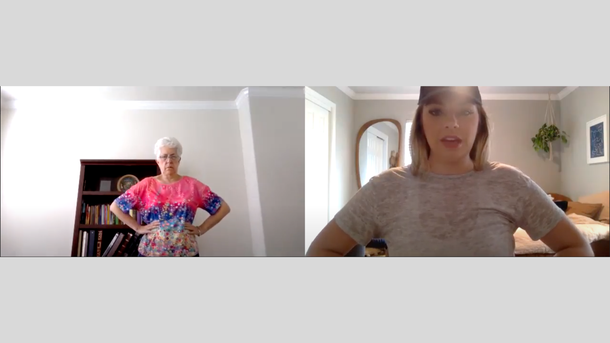
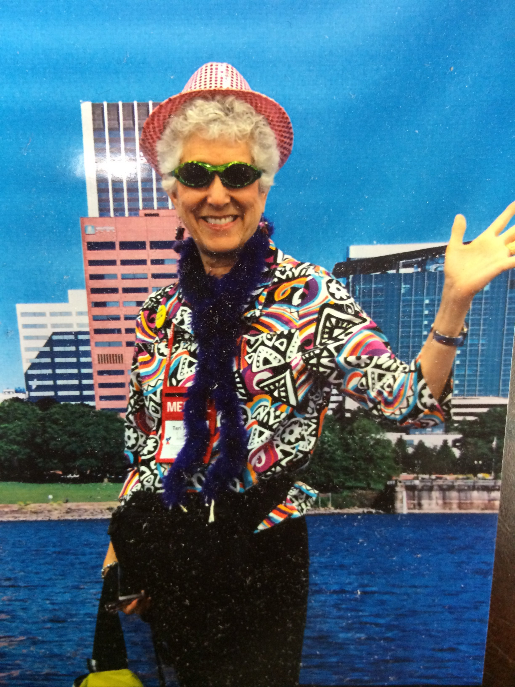

“The thing I am most proud of throughout this process is the confidence I have now to sing and not be embarrassed.”
“This work was so rewarding. I learned that I love teaching as much as I do singing. And working with this population was magical.”
Teri Wathen
Here, My Voice Participant
I was born with a mild to moderate hearing loss that was diagnosed when I was in elementary school. I had a speech teacher who came to my school and taught me lipreading during recess (and I didn’t want to miss recess!). But today I am grateful for the ability to lipread. I got my first hearing aid when I was 12 and learned to just sit up front and lipread my teachers all through high school and college.
I graduated college with a degree in Business Education and began my teaching career in 1968.
My hearing loss deteriorated slowly as I grew older. At the age of 54 I got my first cochlear implant in 2000. It took me a long time to adjust to what I was hearing with that ci—in fact, it took me about 2 years! However, my hearing kept getting better in the ci ear but the other ear with the hearing aid was still going down. In 2005 I got my second implant, and it was so much better!!!
I NEVER had any training or exposure to music growing up. I enjoyed rock and roll music as a teenager, but I never knew the lyrics. I just liked the beat of the various songs.
Natalie Sheppard
Here, My Voice Teacher | Master of Musical Arts, Vocal Arts at USC Thornton School of Music

Teri’s Experience
When we were first asked if we wanted to participate in Here, My Voice, I had no desire to participate. However, Paula Holzband, who lives near me and was also participating in the lab research, came over and convinced me to join. She said, “let’s step out of our comfort zone’. Also, we were in the middle of the pandemic and had nothing else to do anyway, so why not? Thank you, Paula!!
I think the thing I am most proud of throughout this process is the confidence I have now to sing and not be embarrassed. I am still not that comfortable with how my voice sounds, but I am at the point in my life where I don’t care. I just enjoy singing!!!
My personal goal throughout the process was to sing Annie’s Song by John Denver at our recital. My teacher Natalie helped me each week. Natalie’s passion for music rubbed off on me after our very first zoom session. She taught me drills to practice warming up my voice, and to make it easier to breathe while singing. She wanted me to characterize the emotions that each line in the song brought out in me. Her enthusiasm and positive teaching techniques always made me want to please her. At the same time, however, it pleased me to be able to sing and not be shy or embarrassed.
After consistently working on my voice and practicing, I appreciate music and the work that goes into it so much more now.
I will never be a public singer, but now I will always enjoy singing and enjoy listening to others sing. This was a positive experience for me, and I am grateful to everyone who has helped me reach this milestone.


Natalie’s Experience
I developed rapport with Teri right away. I wanted to educate her on how her voice works, and give her tools when approaching singing or simply using the voice for daily speech use. Throughout the process, she gained confidence for singing for other people, power within herself to not be afraid of being “off key”, and found the self-esteem and security in her voice when singing any song. Our relationship flourished right from the beginning.
We ended up texting and talking on the phone throughout the week, as well as emailing playlists back and forth. We hope to meet in person soon and continue working together on voice lessons! I always gave Teri positive feedback first before diving into areas of weakness. This gave her both confidence in what she was totally crushing, and then a little push to encourage things that needed work. She helped me in discovering new ways I could support as a teacher.
This work was so rewarding. I learned that I love teaching as much as I do singing. And working with this population was magical.